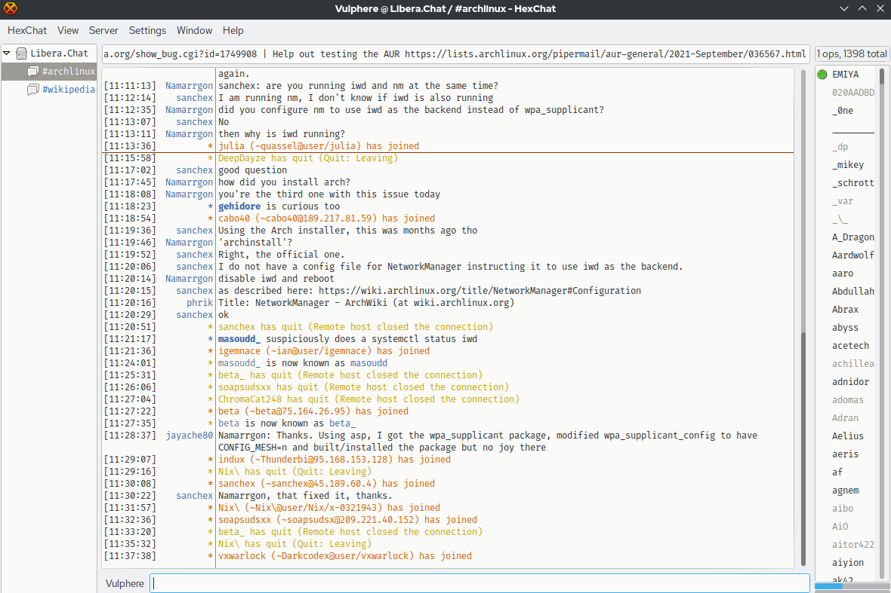

FURKAN TUNCER
SOME OF MY WORK
Stellar
- Developed with the Unity engine
- Designed the UI animations and player rotations without using any additional 3rd party tools(Like DOTween)
- Used free assets from the asset store for the player and UI elements
- Designed for Mobile platforms
Cub3D
- Replica of the original Wolfenstein 3D
- Developed without using any game engines
- Developed in C language
- Used Raycasting to the draw lines
- Mathematical calculations to mitigate the fisheye effect
Transcendence
- Utilized NestJS, React and PostgreSQL for Backend, Frontend and Database respectively
- A group project of 5
- Utilized SOLID principles and concepts like Dependency Injection, Inversion of Control
- Includes an user system with 2FA authentication
- Users can play the pong game, create chat rooms, send private messages and add friends
SoLong
- A game developed purely in C
- Game consists of 35x35 sprites
- After capturing the inputs the sprites are swapped according to the movement direction of the player
- Aim is to collect all arrows and exit through the portal

IRC Server
- This is a server developed with the C++ language, according to the RFC protocal standarts
- Server works best with the IRC application HexChat
- Used SOLID principles and Object Orianted methods
- Utilized functions like, socket(), setsockopt(), bind(), listen(), accept(), recv(), pol()